Fun with 3DS Camera
I decided to look through my 3DS camera on my New 3DS XL, which I got in 2015. There are some random snippets of personal moments, peppered throughout a lotttttt of videogame photos.

The vibe of the whole thing.
To preface, photos taken in 3D will be presented in two formats: either stereoscopically (you can cross your eyes to see in 3D), or as "wigglegrams", which is a very reddit name for an animated gif. Whichever for each image depends on the photo.

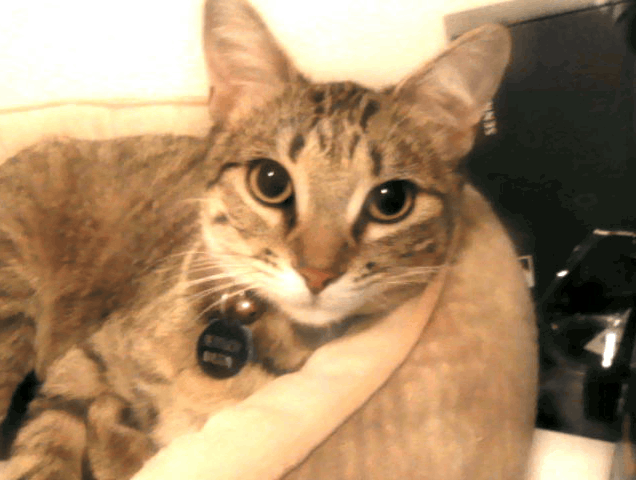
The two formats, featuring my modern-day cat Bertuch.
There's a lot of photos of me, throughout my youth. And photos of others, during events. The first group I'll show were all taken at the North Central Honor Orchestra auditions in 2016, which I took with some orchestra friends on a school day. We got outta class, went to another schoool, and got to chill for hours before/after our auditions. I remember it well, because in the latter half we all went to the extremely dark gym with very blue lighting, and sat in the corner, and I was playing Pokemon Black 2, and fought Colress.

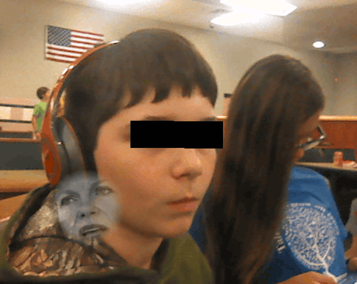
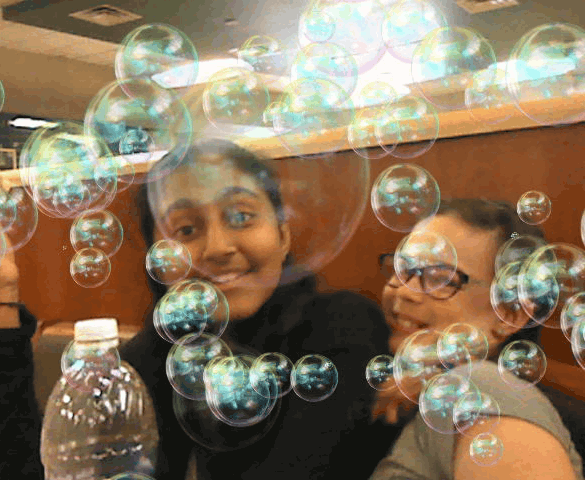
NCHO 2016. Click on photos to learn more.
Later years, when the Switch was out, we'd play Ultimate Chicken Horse. And in 2018, when Yo-kai Watch Blasters was out in the U.S., we played that. There's a fair few photos of my family, though I'm not gonna post those. For the second batch of photos, I've plenty of selfies:
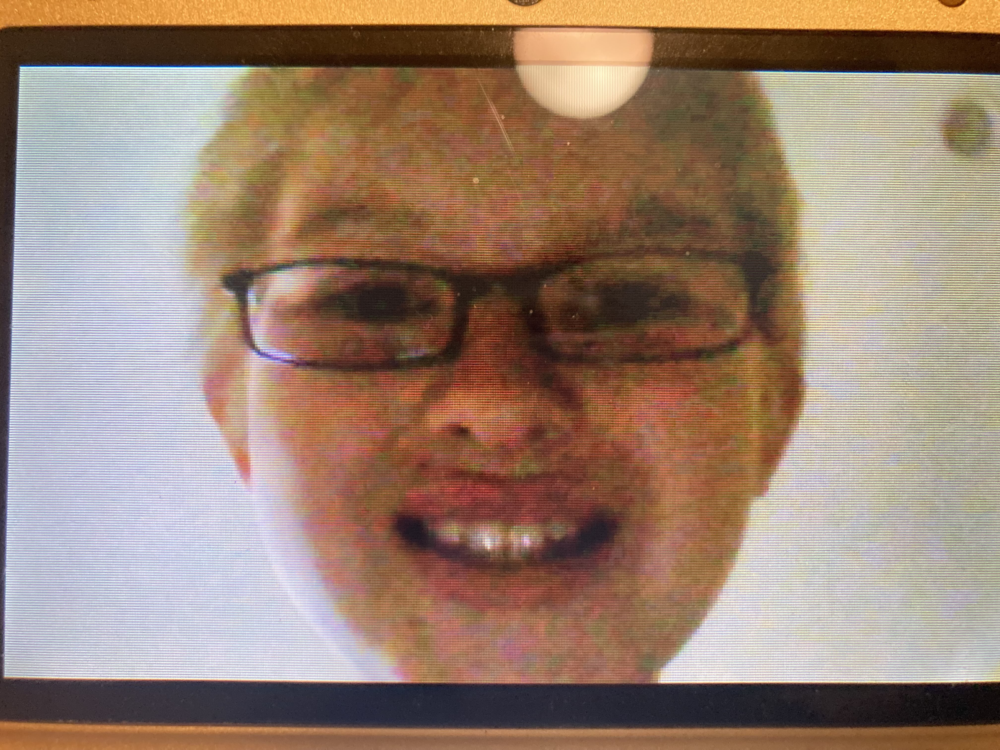
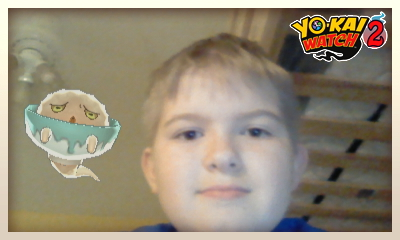
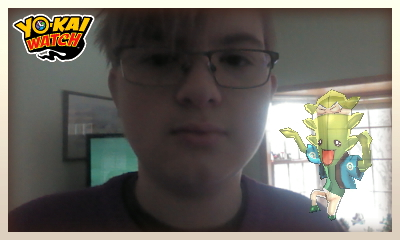
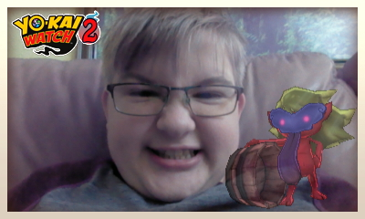
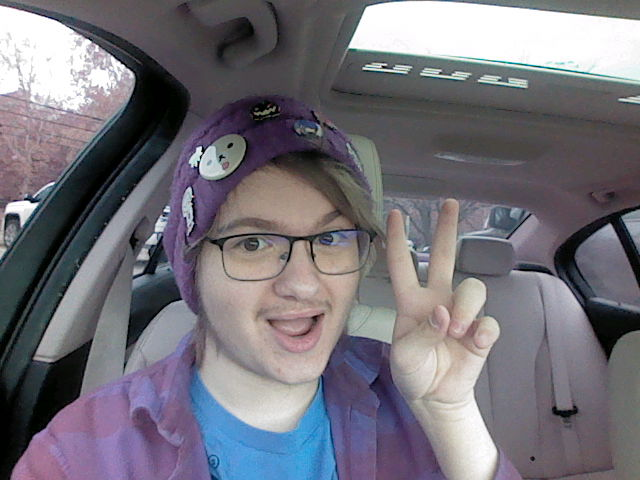
Various selfies. Click on photos to learn more.
And then there's the miscellany.

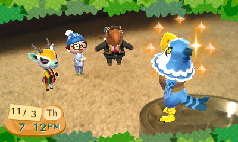
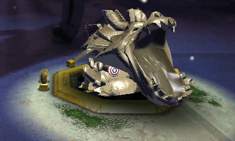
Various miscellany. Click on photos to learn more.
Lotta. Memories, you know. I'm really bad at recall but once I see something, I'm, like, I can know what happened there. So it's a lot of memories. I'll leave you with this photo of me from May 20th 2016. From the bleachers of my brother Alex's graduation. Which has been edited, wouldn't you know.
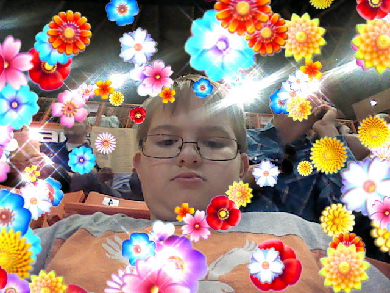
Wow.